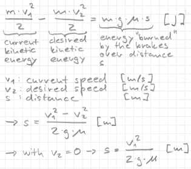

3.2 Basic BrakingBraking Distance

Like you have seen in the previous section, there is a physical speed limit in the turns.
Imagine the following situation: we drive on a straight with speed v1, and in distance d is a turn.
We can compute the possible speed (we call it v2) in the turn with the getAllowedSpeed() method,
which we have developed in the previous chapter. If we make some assumptions, we can compute the
required minimal braking distance s. Now if s is greater or equal than d we have to start braking
(you see we brake as late as possible, and even a bit later). |
ImplementationHere is the code that computes if we need to brake.
float Driver::getBrake(tCarElt* car)
{
tTrackSeg *segptr = car->_trkPos.seg;
float currentspeedsqr = car->_speed_x*car->_speed_x;
float mu = segptr->surface->kFriction;
float maxlookaheaddist = currentspeedsqr/(2.0*mu*G);
maxlookaheddist is the distance we have to check (formula with special case v2 = 0).
float lookaheaddist = getDistToSegEnd(car); lookaheaddist holds the distance we have already checked. First we check if we need to brake for a speed limit on the end of the current segment.
float allowedspeed = getAllowedSpeed(segptr);
if (allowedspeed < car->_speed_x) return 1.0;
Compute the allowed speed on the current segment. We check our speed, and if we are too fast we brake, else we continue with the algorithm. Here you can improve the return value, it's a bit tough to brake full (e. g. make it dependent on the speed difference).
segptr = segptr->next;
while (lookaheaddist < maxlookaheaddist) {
The first line moves segptr to the next segment. The guard of the loop checks if we have already checked far enough.
allowedspeed = getAllowedSpeed(segptr);
if (allowedspeed < car->_speed_x) {
Compute the allowed speed on the *segptr segment. If the allowed speed is smaller than the current speed, we need to investigate further.
float allowedspeedsqr = allowedspeed*allowedspeed;
float brakedist = (currentspeedsqr - allowedspeedsqr) / (2.0*mu*G);
Here we compute the braking distance according to the formula above.
if (brakedist > lookaheaddist) {
Here the magic check is done. If the required distance to brake is greater than the current distance we need to brake. This works because the simulation timestep is small, so we fail the point in the worst case with ~2.0 meters. So to fix that you can add always 2 meters to the brakedist, or better a speed dependent value.
return 1.0;
}
}
lookaheaddist += segptr->length;
segptr = segptr->next;
}
return 0.0;
}
The remaining code is straightforward. If we decided to brake we return 1. If we loop further we update the lookaheaddist and switch to the next segment. A comment to the return value: 1 means apply full brakes, so we have later to adjust the pressure in the brake system, that the wheels don't lock up immediately or we have enough pressure at all. You will see this on the xj-220, the wheels will smoke very nice... A hint: it should also be possible to compute the right pressure and do an automatic set up of that value. Now we need also to change the drive method to call getAccel and getBrake. car->ctrl.gear = 4;
car->ctrl.brakeCmd = getBrake(car);
if (car->ctrl.brakeCmd == 0.0) {
car->ctrl.accelCmd = getAccel(car);
} else {
car->ctrl.accelCmd = 0.0;
}
We have to switch into a higher gear to check the stuff. We just accelerate if we don't brake. And finally you need to update driver.h with the interface of getBrake. float getBrake(tCarElt* car); TestdriveDo some test runs with the different cars. Enable the debug vector (press "g") to watch the return values of the robot. With cg-nascar-rwd you should recognize that the braking is very "flashy" on high speeds, try to explain why. The lap times are now:
DownloadsIn case you got lost, you can download my robot for TORCS 1.2.0 or later. Summary
|
|
Back |
What about gears? |